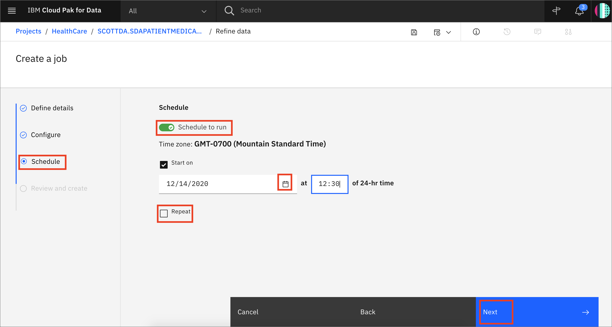

Data Visualization and Data Refinery¶
Let's take a quick detour to the Data Refinery tool. Data Refinery can quickly filter and mutate data, create quick visualizations, and do other data cleansing tasks from an easy to use user interface.
This section is broken up into the following steps:
Note: The lab instructions below assume you have a project already and have data you will refine. If not, follow the instructions in the pre-work and import data to project sections to create a project and assign data to your project.
1. Load Data¶
- Go the (☰) navigation menu and click on the Projects link and then click on your analytics project.

-
From the Project home, under the Assets tab, ensure the Data assets section is expanded or click on the arrow to toggle it and open up the list of data assets.
-
Click the check box next to the merged data asset XXXPATIENTMEDICATIONSCONDITIONS (where
XXXis your username or the username of the person who granted you data access) to check it, then click the 3 vertical dots to the right, and select the Refine option from the menu.
- Data Refinery will launch and open to the
Datatab. It will also display the information panel with details of the data refinery flow and where the output of the flow will be placed. Go ahead and click theXto the right of the Information panel to close it.
2. Refine Data¶
We'll start out in the Data tab where we wrangle, shape and refine our data. As you refine your data, IBM Data Refinery keeps track of the steps in your data flow. You can modify them and even select a step to return to a particular moment in your data’s transformation.
Create Transformation Flow¶
- With Data Refinery, we can transform our data by directly entering operations in R-style syntax or interactively by selecting operations from the menu. For example, start typing filter on the Command line and observe that autocomplete will give hints on the syntax and how to use the command.
-
A
filteroperation syntax will be displayed in the Command line. Clicking on the operation name within the Command line will give hints on the syntax and how to use the command. For instance the following command filters for Patients who live inLancaster:filter(`CITY` == 'Lancaster') -
Type or cut-n-paste the filter above in the command line and click
Apply. Notice that the remaining rows have the City 'Lancaster'.

- Now, click on the counter-clockwise "back" arrow to remove the filter. Alternately, we can also remove the filter by clicking the trash icon for the Filter step in the Steps panel on the right.

- We will use the UI to explore and transform the data. Click the
+Operationbutton.
- Let's use the
Filteroperation to check some values. Click onFilterin the left panel.
- Let's look at all the Patients who are no longer alive. Select the
DEATHDATEcolumn from the Column drop down list, and selectIs not emptyfrom the Operator drop down list, and then click theApplybutton.
- Now, click on the counter-clockwise "back" arrow to remove the filter. Alternately, we can also remove the filter by clicking the trash icon for the Filter step in the Steps panel on the right.
- We can perform other filters. Click on the
+Operationbutton again, and this time selectFilterand then selectTOTALCOSTfrom the Column drop down list andIs greater thanfrom the Operator drop down list, and finally enter2000under Value and Click theApplybutton.
-
Remove the filter using one of the methods described above.
-
Let's say we've decide that there are columns that we don't want to leave in our dataset ( maybe because they might not be usefule features in our Machine Learning model, or because we don't want to make those data attributes accessible to others, or any other reason). We'll remove the
PREFIX,FIRST,LAST,SUFFIX, andMAIDENcolumns. -
For each columnn to be removed: Click the
+Operationbutton, then select theRemoveoperation. Click theChange column selectionoption, choose the desired column to remove (i.e.PREFIX), clickNextand clickApply.
-
The columns will be removed. Repeat for each of the above columns.
-
At this point, you have a data transformation flow with 5 steps. As we saw in the last section, we keep track of each of the steps and we can even undo (or redo) an action using the circular arrows. To see the steps in the data flow that you have performed, click the Steps button. The operations that you have performed on the data will be shown.
- You can modify these steps in real time and save for future use.
Schedule Jobs¶
Data Refinery allows you to run jobs at scheduled times, and save the output. In this way, you can regularly refine new data as it is updated.
- Click on the "jobs" icon and then
Save and create joboption from the menu.
- Give the job a name and optional description. Click
Next.
-
Click
Nexton the Configure tab. Note that you could change Select environment to a different one at this time, assuming that you had alternate environments in your project. -
Under the Schedule tab, click the
Schedule to runslider. Click around and notice that you can set theStart ontime, which has a "calendar" icon for choosing the date. TheRepeatchoice works in the same way.. We won't schedule a job at this time, so go ahead and click theSchedule to runslider, and it will switch toSchedule off. ClickNextto move on.

- Finally, under the Review and create tab you can
Editthe Details, Configuration, or Schedule in this Data Refinery job. Also, hover over the output name, which in this case is * SCOTTDA.SDAPATIENTMEDICATIONSCONDITIONS_shaped.csv* . Click theCreate and Runbutton.
- The job will be listed as Status
Runningand then the Status will change toCompleted. You can clickEdit jobto make changes to the job.
- Give the job a name and optional description. Click
Next.
-
Click
Nexton the Configure tab. Note that you could change Select environment to a different one at this time, assuming that you had alternate environments in your project. -
Under the Schedule tab, click the
Schedule to runslider. Click around and notice that you can set theStart ontime, which has a "calendar" icon for choosing the date. TheRepeatchoice works in the same way.. We won't schedule a job at this time, so go ahead and click theSchedule to runslider, and it will switch toSchedule off. ClickNextto move on.
- Finally, under the Review and create tab you can
Editthe Details, Configuration, or Schedule in this Data Refinery job. Also, hover over the output name, which in this case is * SCOTTDA.SDAPATIENTMEDICATIONSCONDITIONS_shaped.csv* . Click theCreate and Runbutton.
- The job will be listed as Status
Runningand then the Status will change toCompleted. You can clickEdit jobto make changes to the job.
- You can click
Editnext to Scheduled to run. Notice that you can toggle the Schedule to run switch and choose a date and time to run this transformation as a job as well as if and how frequently it will repeat. We will not run this as a job, go ahead and click theCancelbutton
3. Profile Data¶
- Go back to your project by clicking on the project name in the directory path.
- Return to the profile view by clicking the check box next to the merged data asset XXXPATIENTMEDICATIONSCONDITIONS (where
XXXis your username or the username of the person who granted you data access) to check it, then click the 3 vertical dots to the right, and select the Refine option from the menu.
- Clicking on the Profile tab will bring up a view of several statistics and histograms for the attributes in your data.
-
You can get insight into the data from the views and statistics:
-
The distribution of birthdates is heavily skewed towards older dates.
-
There are over 3x more married people than single people in this dataset.
-
There are over 2x more people of Irish descent than any other ethnicity.
-
Females outnumber males.
4. Visualize Data¶
Let's do some visual exploration of our data using charts and graphs. We can accomplish this in Data Refinery interactively without coding.
- Choose the Visualizations tab to bring up an option to choose which columns to visualize. Under Columns to Visualize choose BIRTHDATE. Click
+Add columnand then TOTALCOST, then click theVisualize databutton.
- We first see that the select chart is a Scatter plot. There is some clustering of higher total costs on the left side of the graph, indicating higher total costs for older people, as expected. Hovering over the outlier on the y-axis shows an individual with a very high total cost. We may wish to remove this individual from the dataset during the feature engineering phase of building a machine learning model, as it is likely to skew the results.
- Move the slider at the bottom of the Scatter plot to the right a bit to scroll past that one outlier individual and we can see a more even distribution. Scroll back and forth to explore, noticing how the maximum for TOTALCOST tends to go down as the BIRTHDATE gets more recent. Hover over any data point to bring up the details.
-
Also note that we can add items like Primary title, Subtitle, and Footnote.
-
Click on the
Actionsarrow and notice that you can perform tasks such as Download chart details, Download chart image, Field format or set Global visualization preferences.
- Click on the Global visualization preferences in the Actions menu. Click and explore the tabs for Titles, Tools, Theme. You can launch the Theme Builder to get creative with colors and themes, and save a default.
Conclusion¶
We've seen a small sampling of the power of Data Refinery on IBM Cloud Pak for Data. We saw how we can transform data using R code, at the command line, or using various Operations on the columns such as changing the data type, removing empty rows, or deleting the column altogether. We next saw that all the steps in our Data Flow are recorded, so we can remove steps, repeat them, or edit an individual step. We were able to quickly profiile the data, so see histograms and statistics for each column. And finally we created more in-depth Visualizations, creating a scatter plot mapping BIRTHDATE vs. TOTALCOST.